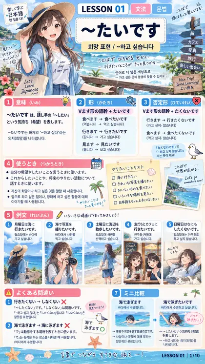
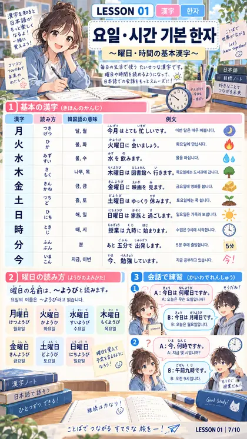

디자인 5안 — 완전히 다른 다섯 가지
화면 구조(교재형)는 그대로 두고 시각 언어만 바꿨습니다. 다섯 모두 같은 화면(LESSON 01 과 홈)이라 그대로 비교됩니다. 번호를 고르시면 앱 전체를 그 언어로 다시 칠합니다.
1
Washi & ink
화지(和紙) — 종이와 먹
따뜻한 종이색 바탕, 먹빛 글자, 인주(朱) 한 가지 강조색. 그림자·그라데이션 없이 얇은 괘선만. 명조(Shippori Mincho) 활자로 교재·습자 노트의 인상.
장점화려한 수업 자료가 종이에 붙인 유인물처럼 보임. 오래 봐도 눈이 편함.
단점차분해서 "앱"보다 "문서"에 가깝게 느껴질 수 있음.
추천도 9 / 10 · 자료와 가장 잘 맞고, 지금과 가장 다름
習
일본어 복습노트
PREPLY · LESSON 01–03
一課二課三課
一
희망과 계획 말하기
～たいです・～つもりです・기본 조사



資수업 자료10장
文문법5
語단어0 / 53
漢한자0 / 53
課수업復복습度진도記노트
2
Night neon
야간형 — 검정과 네온
거의 검은 바탕에 반투명 유리 카드, 시안·보라 네온 강조. 밤에 눈이 부시지 않고, 화면이 또렷합니다. 출장 이동·야근 후 사용에 유리.
장점저녁·기내에서 편함. 인상이 가장 현대적.
단점밝은 수업 자료가 어두운 배경에서 튀어 보임.
추천도 6 / 10 · 멋있지만 자료와 충돌
일본어 복습노트
PREPLY · LESSON 01–03
1과2과3과
LESSON 01 · 2026.08.25
희망과 계획 말하기
～たいです・～つもりです
資수업 자료10장
語
단어
12/53問퀴즈37문제
課수업復복습度진도記노트
3
Swiss print
인쇄형 — 흑백 그리드
순백 바탕, 2px 검은 괘선, 둥근 모서리·그림자 전면 배제, 빨강 하나만 강조. 정보가 표처럼 딱 떨어져 읽는 속도가 가장 빠릅니다.
장점정보 밀도 최고. 흑백이라 자료 색이 더 살아남.
단점딱딱하고 차갑습니다. 매일 보기엔 피로할 수 있음.
추천도 7 / 10 · 강렬하지만 호불호가 큼
일본어 복습노트
L 01–03
1과2과3과
01
희망과 계획 말하기
～たいです / ～つもりです / 조사 に·で·を
資수업 자료10
文문법5
語단어0/53
問퀴즈37
課수업復복습度진도記노트
4
Soft clay
말랑형 — 파스텔 입체
라벤더 바탕에 두툼한 흰 카드, 아래로 떨어지는 단색 그림자, 큼직한 버튼. 듀오링고 계열의 가볍고 친근한 학습 앱 인상.
장점터치 대상이 크고 분명. 매일 열기 부담 없음.
단점흔한 인상. 성인 학습자에겐 다소 유아적.
추천도 6 / 10 · 편하지만 개성이 약함
일본어 복습노트
PREPLY · LESSON 01–03
1과2과3과
LESSON 01
희망과 계획 말하기
～たいです・～つもりです
資수업 자료10장
語단어0/53
問퀴즈37
課수업復복습度진도記노트
5
Editorial
잡지형 — 세리프 편집
크림색 지면, 명조 세리프, 큼직한 과 번호, 겹줄 괘선과 금박 같은 머스터드 강조. 잘 만든 어학 교재·잡지의 인상.
장점품위 있고 어른스러움. 자료와도 자연스럽게 어울림.
단점세리프라 작은 글자의 가독성에 신경 써야 함.
추천도 8 / 10 · 1안 다음으로 추천
일본어 복습노트
PREPLY · LESSON 01–03
1과2과3과
01
희망과 계획
말하기
말하기
～たいです・～つもりです・기본 조사
資수업 자료10장
文문법5가지
語단어0 / 53
問퀴즈37문제
課수업復복습度진도記노트
추천 순위
- 1안 화지 — 지금과 가장 다르면서, 밝은 수업 자료가 종이에 붙인 유인물처럼 자연스럽게 앉습니다.
- 5안 잡지 — 어른스럽고 품위 있으며 자료와도 충돌하지 않습니다.
- 3안 인쇄 — 정보 밀도와 가독 속도는 최고, 다만 차갑습니다.
- 2안 야간 — 저녁 사용에 좋지만 밝은 자료와 대비가 거칩니다.
- 4안 말랑 — 편하지만 개성이 약합니다.
제 선택: 1안 화지. 배경이 중립적인 종이색이라 30장의 화려한 자료가 유일한 색의 주인공이 되고, 과별 색(파랑·분홍·남색)은 인주색 하나로 정리되어 화면 전체가 흔들리지 않습니다. 밤에 쓰실 일이 많다면 1안의 어두운 버전(먹지)도 함께 만들어 드릴 수 있습니다.